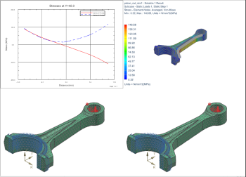
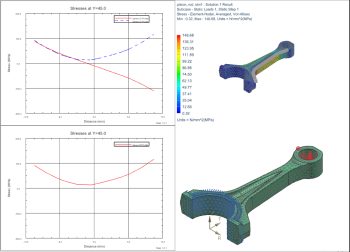

Display results in multiple viewports
 Four Views (Layout group)
Four Views (Layout group)

Plot a second graph.
 Post-Processing Navigator
Post-Processing Navigator
-
 Stress Along Vector (under Solution 1→Graphs)
Stress Along Vector (under Solution 1→Graphs)
-
 Plot
Plot -
 (bottom left viewport)
(bottom left viewport)
-

-
The graph of the von Mises stress assumes the formatting of the active graph template, which is the overlay graph template you created in a previous step.